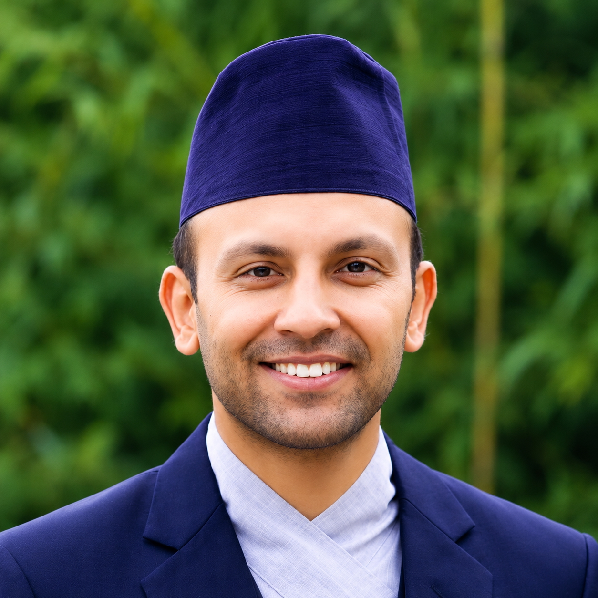

Genomics
De novo assembly, annotation, and comparative genomics for non-model and emerging model species.
Research Associate · Computational biologist
Harvard Chan Bioinformatics Core · Harvard T.H. Chan School of Public Health
I build and apply genomic methods to understand how biology works at the molecular level. My work spans de novo genome assembly, transcriptomics, and epigenomics — with a long-running interest in host–parasite systems, evolution, and reproducible computational workflows.

What I'm working on
Consulting on RNA-seq and single-cell analyses across Harvard labs — from study design through differential expression and cell-state inference.
Building reproducible Nextflow / Snakemake workflows for genomics and epigenomics, with a focus on portability and clean documentation.
Designing and delivering bioinformatics workshops at the Harvard Chan Bioinformatics Core for researchers across the school.
Reading deeper into single-cell multi-omics & spatial transcriptomics — especially around integrative analyses of regulation and cell identity.
Four interconnected areas drive my current and past work — building references, interpreting expression, decoding regulation, and asking how parasites rewire their hosts.
De novo assembly, annotation, and comparative genomics for non-model and emerging model species.
Bulk & single-cell RNA-seq for differential expression, splicing, and cell-state inference.
WGBS, ChIP/CUT&RUN, and chromatin accessibility to map regulatory programs.
Integrative analyses of behavioral manipulation and host–parasite molecular interplay.